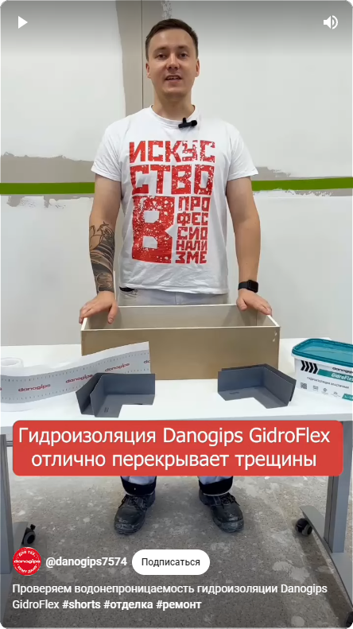
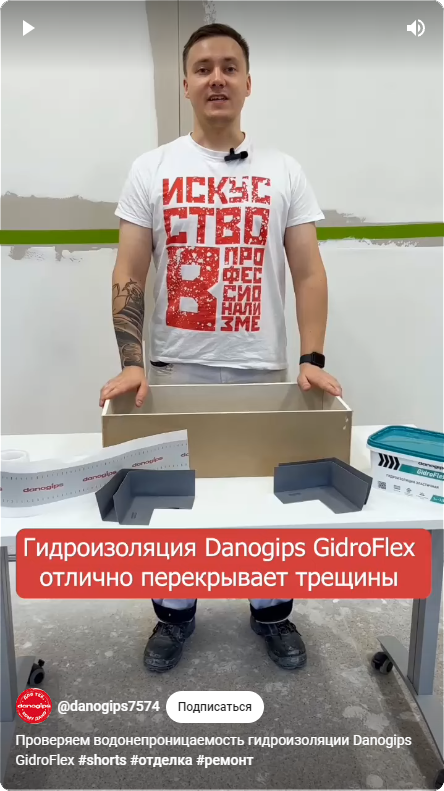

Belgilash
Mahsulotlar bilan har bir chelakda markirovka mavjud. Yorliq qopqoqda joylashgan. Markirovka mahsulot ishlab chiqarish liniyasidan chiqarilgan paytda qo'llaniladi va ishlab chiqarish zavodi, partiya raqami (yoğurma), ishlab chiqarish sanasi to'g'risida ma'lumot olib boradi.
Gidroizolyatsiyaning yaroqlilik muddati markirovkada ko'rsatilgan sanadan boshlab hisoblanadi.


 Qo'llash:
Qo'llash:


 
